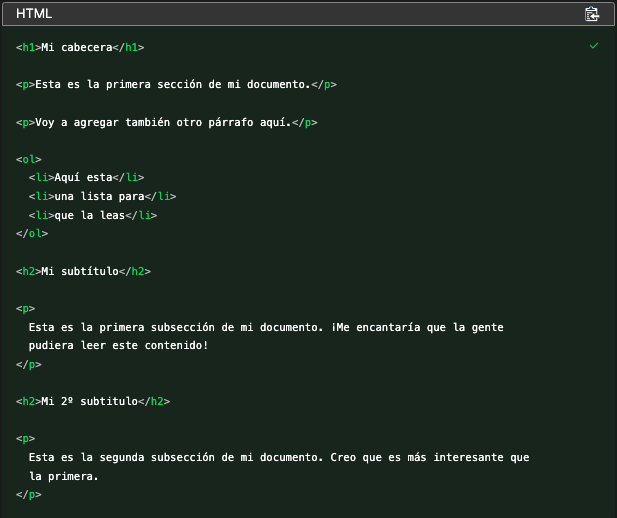
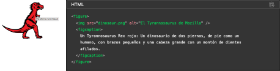
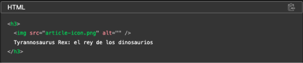

| Análisis | Oportunidad |
|---|---|
|
Orden de títulos en HTML Los lectores de pantalla leen las páginas web en orden, según como esté maquetada desde HTML. Si no se siguen buenas prácticas de HTML como el etiquetado de los títulos en orden (H1, H2, H3...) la experiencia de navegación se vuelve mucho más inefectiva, ya que primero se leerán los títulos que están al final y se “perderá” todo lo que está por encima de ese contenido. |
Implementar las buenas prácticas en HTML Para solucionar esto se recomienda que siempre se sigan las buenas prácticas de código HTML, implementando las etiquetas de títulos en el orden consecutivo correspondiente.  |
|
Texto alternativo en las imágenes Detectamos que las imágenes que están en el sitio no tienen texto alternativo. Esto provoca que los lectores de pantalla no puedan identificar el contexto que tiene la imagen y dificultar el entendimiento. |
Si la imagen no es decorativa Si la imagen no es decorativa se recomienda que puedas incluir un texto descriptivo sobre ella usando el atributo “alt”. De esta manera, cuando el lectos de pantalla se pose sobre ella identificará que es una imagen y leerá la descripción para que el usuario tenga todo el contexto. 
En caso que la imagen tenga un propósito visual de diseño pero no sea indispensable para el entendimiento o la navegación, lo más conveniente es dejar el atributo alt vacío para que el lector de pantalla sepa de antemano que no la debe describir.  |